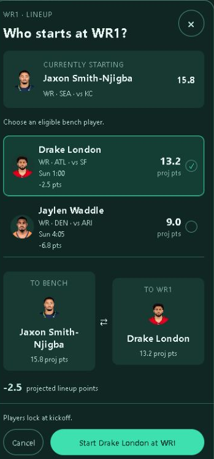
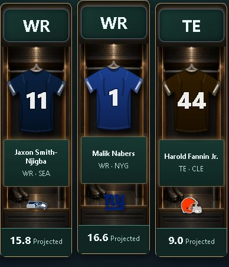
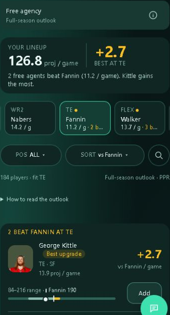
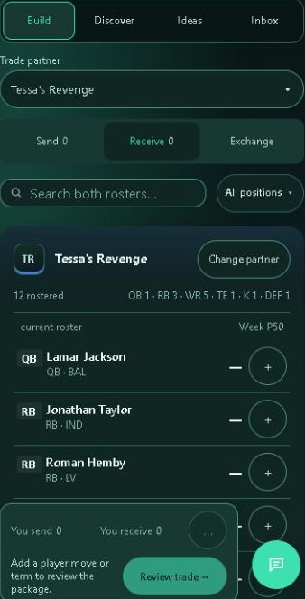

A quick guide
Tessa's Touchdown
Memorial League
If you're not sure where to tap, this should help.
Jump to whatever you're trying to do. You don't need to learn the whole site at once.
Open My teamFull PPR · 16-player roster · ScoreSense hosted
01 · Your weekly job
How do I set my lineup?
My team → Lineup
Your starters are the players whose points count this week. Your bench holds the rest. Moving someone to the bench keeps them on your team.
- Check the week. Look for empty slots, injuries and BYE players. A bye means no game that week.
- Tap the position badge for the spot you want to change, such as WR1. Pick a bench player from the choices shown and compare the two.
- Tap Start [player] at [slot]. That saves the change. Check that the new player appears among your starters.
See the Lineup screen

Can I move the jerseys instead?
My team → Room
- On a phone: tap a bench jersey, then tap a lit starter locker. On a computer: drag a bench jersey onto a lit locker.
- The lineup saves right away. Use Undo if offered and both players are still unlocked.
See the starter lockers

02 · Your call
Can I start players based on how I feel about them?
Yes. You can pick your starters yourself in My team, even if the projections prefer someone else. Or use Vibes to turn your ratings into a suggested lineup.
Page picker → League → Vibes
- Rate your players. On a phone, swipe right to rate someone Higher, or left to rate them Lower. On a computer, use the labeled buttons.
- Open Vibe ranking, then Vibes-adjusted projections. Check the suggested starters before using them.
- Tap Save lineup to use that suggested lineup. Then check your starters in My team → Lineup.
If Save lineup isn't available, you can still review your ratings and make any unlocked changes in My team.
Open Vibes03 · Check the scores
How do I see other people's matchups?
- Open This Week. Your own matchup is there, along with the league scoreboard and standings.
- In the League scoreboard, tap the matchup you want to watch. That opens its Game center.
- In Game center, choose League to pick another game. Your matchup brings you back to your own.
Use Starters to see who's earning points in that game, or Bench to see who's sitting out of the lineup.
Open This Week04 · Pick someone up
How do I get a new player?
Fantasy → Free agents
Free agents are players who aren't on anyone's team. If someone already has the player you want, you'll need to try a trade.
- Use Pos or the search icon to find a player. Tap one of your players or roster spots near the top if you want to compare a replacement.
- Tap a player for details. Compare points per game with points per game, rather than season totals.
- Tap Add if it's available and follow the steps shown. If the player is on waivers, submit a claim instead and check when it will be decided.
A waiver claim means you're asking for the player. They aren't yours yet. If more than one team asks, this league uses waiver priority to decide who gets them. If you choose someone to drop only if your claim succeeds, that player stays on your team until the claim goes through.
How adds work explains the current window. Comparing players does not drop anyone.
See the Free agents screen

What if my team is full?
You can keep up to 16 players. You may need to let someone go to make room.
My team → Player details → choose the player → Drop player. This releases them from your team. Dropping is different from moving someone to your bench.
Browse Free agents05 · Make an offer
How do I trade for someone else's player?
Page picker → League → Trades
A trade is a swap between teams. Pick who you'd like to get and who you're willing to give up, then send the other person an offer.
- In Build, tap Choose partner and pick the team that has the player you want.
- Under Send, pick players from your team to offer. Under Receive, pick the players you want from theirs. Exchange shows both sides together.
- Tap Review trade. Check what you're giving up and getting back, then tap Propose trade to send the offer.
Sending an offer doesn't move anyone yet. The other person has to agree. Check Inbox for replies and offers sent to you. Read both sides of an offer before accepting it.
Not sure who has a player? Open League → Rosters to look through everyone's team. You can also send a private message to talk through a deal.
See the trade builder

06 · Talk to the league
Where do I chat with everyone?
- Open This Week and find League chat. On other Fantasy pages, tap the chat bubble at the bottom right.
- Choose League to talk to everyone. Type in Message your league…, then tap Send.
- For a private message, choose Direct, pick the manager you want to talk to and send your message there.
Use @ to mention someone, or add a reaction to a message. On a keyboard, Enter sends; Shift + Enter starts a new line.
Open This Week07 · The fun stuff
Can I change how my team looks?
Your team, your look
My team → Room → Edit look: change the photo, banner or room, then Save look.
Give players nicknames
Open a locker in your Room to give that player a nickname.
Vote for weekly awards
In Game center, expand Standings & weekly awards to cast your votes.
See the league's history
Open League → Insights for past results and league history.
When draft season returns
Use Draft for scheduling and picking, Strategy to rank targets, and Tools → Mock draft to practice.
08 · If you're stuck
What if something doesn't look right?
Check your league, team and week first, then try refreshing the page. If it still looks wrong, ask the commissioner.
League → Rules has the scoring and roster rules, including how many players you can keep.
The pictures here are examples from the live site. Your players, numbers and available actions change with the week.